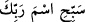

kıskandıklarından, düşmanlık beslediklerinden ve kibirlendiklerinden kendisine deli
demişlerdi. Oysa onlar kesin olarak biliyorlardı ki Peygamberimiz’in aklı başındadır ve
fikri tam olarak çalışmaktadır.
Ebû Hayyân der ki: “
/Bi nîmeti rabbike” ifâdesi yemin ifâdesidir. Cümlenin
öznesi ile yüklemi arasına girmiştir. Bu kasemin özne ile yüklem arasına getirilmesi, söz
konusu düşük vasfın yâni deliliğin Peygamber Efendimiz’de olmadığı hükmünü
pekiştirmek ve ifâdeye güç katıp mübâlağa yüklemek için getirilmiştir. Şeyh
Necmüddin et-Te’vilâtü’n-necmiyye’sinde aynı kanâate katılmış ve söz konusu ifâdenin
yemin olduğunu söylemiştir.
Rivâyet olunduğuna göre Peygamber Efendimiz Hz. Hatice (r.anha) vâlidemizi evde
bırakarak Hira Nur dağına gider. Hz. Hatice eve geldiğinde eşini evde bulamaz. Daha
sonra bir de ne görsün Peygamber Efendimiz çıkagelir; yüzü değişmiş, rengi uçup
gitmiştir. Hz. Hatice (r.anha): “Neyin var?” diye sorunca Peygamberimiz (s.a.) ona
Cebrâil (a.s.)’in kendisine indiğini ve kendisine “Rabbinin adıyla oku” (el-Alak, 96/1)
dediğini haber verir.
Bu âyet-i kerîme, Kur’an-ı Kerim’den Peygamber Efendimiz’e inen ilk âyettir.
Peygamber Efendimiz (s.a.) sözüne şöyle devam eder: Sonra Cebrâil beni alçak bir yere
indirdi. Kendisi abdest aldı, ben de aynı şekilde abdest aldım. Sonra namaz kıldı ben de
onunla birlikte iki rekat namaz kıldım. Sonra Cebrâil bana dönerek: “Ey Muhammed,
namaz işte böyle kılınır” dedi. Peygamber Efendimiz (s.a.) bunları Hz. Hatice’ye
anlattıktan sonra o, amcasının oğlu Varaka b. Nevfel’e gider. Varaka, Kureyş’in dinini
terketmiş hristiyanlığa girmiştir. Hz. Hatice ona Peygamber (s.a.)’den duyduklarını
anlatır ve bunun ne anlama geldiğini sorar. Varaka Hz. Hatice’ye, “Muhammed (s.a.)’i
bana gönder” der. O da Peygamberimiz’i gönderir. Varaka, “Cebrâil sana herhangi bir
kimseyi dine dâvet etmeni emretti mi?” diye sorar. Peygamber Efendimiz “hayır”
deyince Varaka: “Vallahi eğer senin dâvet günlerinde sağ olursam sana mutlaka yardım
edeceğim” der. Fakat Peygamber Efendimiz’in dâvete başlamasından önce vefat eder.
İşte bu olay Kureyş kâfirlerinin dillerine düşer ve “o mecnûndur” derler.[24] Allah bu
âyet-i kerîmede Peygamberin deli olmadığını yemin ederek ifâde eder. Yemin edilerek
vurgulanan gerçekler sûrenin başından itibâren ilk beş âyette açıklanmaktadır.
İbn Abbas (r.anhümâ) der ki; ilk nâzil olan âyet “
/sebbihisme rabbike”
(A’lâ, 87/1) âyetidir. Bu sûrenin ilk âyetleri ise ikinci inen âyetlerdir.
et-Te’vilâtü’n-necmiyye’de bu âyetler şöyle tefsir olunur: Sen ezelde olmuş olanlar
hakkında ve ebediyete kadar olacak olanların bilgisi hakkında önü kapatılmış değilsin.
Çünkü Arapçada “cin” kelimesi örtmek anlamına gelir. Cinlere cin denmesi kendilerini
insanlardan gizleyebilmelerinden dolayıdır. Tam tersine sen olmuş bulunan her şeyi
bilmektesin ve ilerde olacak olanlardan da haberdarsın. Peygamber Efendimiz’in her
şeyi kuşatan bir ilme sâhip olduğunu, onun şu sözü bizlere göstermektedir: “Cebrâil
avucunu omuzumun üzerine koydu. Elinin serinliğini iki mememin ortasında